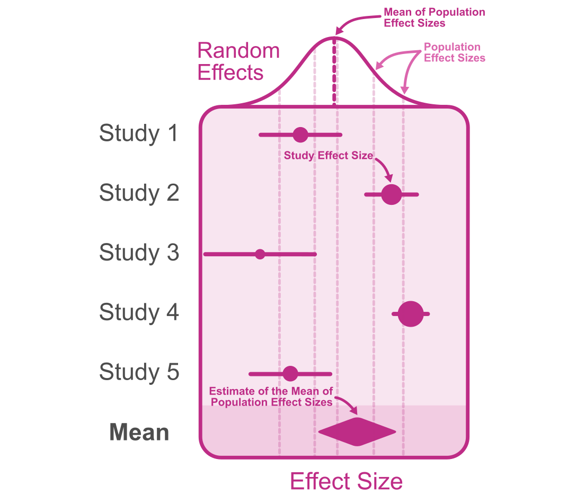

Primary Authors: Matthew B. Jané Reviewers: Contributors:
11.1 Introduction
Meta-analysis is an analytic tool to synthesize quantitative evidence from multiple studies. By systematically combining and analyzing the results of multiple studies, meta-analysis provides a comprehensive overview, unveiling patterns, trends, and insights that individual studies might not be able to capture. Combining research findings also has the added benefit of increasing the precision of our results (i.e., greater statistical power). In this section we will cover the method described by (Hunter and Schmidt 1990) since it is readily compatible with artifact corrections (see next chapter). For the random-effects model however, we use an integrated approach that incorporates methods from Hunter and Schmidt (1990) and Hedges and Vevea (1998) that was first introduced by Morris et al. (2014). However it is important to note that there are other common methods to conduct meta-analyses that have their strengths and weaknesses (Hedges and Olkin 2014; Callender and Osburn 1980; Johnson, Mullen, and Salas 1995).
11.2 Common-Effect Model
A common effect model is the simplest form of meta-analysis. It assumes that all the variation in observed effect sizes is attributable to sampling error. In other words, all the observed effect sizes are estimates of the same population effect size. Note that there is a distinction between fixed-effects models and a common effect model (Viechtbauer, n.d.; Laird and Mosteller 1990). The common effect model assumes that the true effect size is identical for each study while the fixed effects model does not assume this. Instead, the fixed effects model can be interpreted as the weighted average of true effects. Computationally, they are the same and provide the same parameter estimates, yet the interpretation differs.
The diagram above depicts a common effect meta-analysis of five studies. The study effect sizes are homogenous and all estimate a single true population effect size.
11.2.1 The General Case
The common effect model can be modeled such that population effect size \(\vartheta\) is held constant each sample (study) effect sizes (\(\theta_i\)), such that,
Where \(\varepsilon_i\) indicates sampling error and the subscript \(i\) denotes each study. Similar to the true score theory model that we discussed in chapter 4, the variance components of each term can similarly be written out as,
Therefore the only source of variation in the observed effect sizes, is sampling error. Since sampling error varies from study to study, we can take the average sampling variance across studies to estimate \(\sigma^2_\varepsilon\):
Ultimately, our goal is to obtain a precise estimate of the population effect size. To obtain an estimate of the population effect size, \(\vartheta\), we can calculate the average observed effect size, \(\bar{\theta}_i\) from \(k\) studies. However, in practice, effect sizes from different studies have varying levels of precision (i.e., varying sample size). A simple average will not account for the differences between studies in their precision. Instead, we can calculate a weighted average where the weights each study can be calculated by the inverse variance (i.e., precision) of each study such that,
This weighted average will be an unbiased estimate of the population effect size. However, even though this mean effect size is more precise compared to single-study estimates, it is not exempt from error itself. In the fixed-effects model, we can obtain the standard error of our estimate of the population effect size using,
\[
SE_{\hat{\vartheta}} = \sqrt{\frac{\sigma^2_\varepsilon}{k}}
\] The standard error can be used to comput the 95% confidence intervals of the meta-analytic point estimate:
11.2.2 Fixed Effects Meta-Analysis of Correlations
To apply the general case in the previous section to correlation coefficients, lets define our model similarly to Equation 11.1,
\[
r_i=\rho+\varepsilon_i.
\]
Where \(r_i\) is our sample (study) correlation and \(\rho\) is the population correlation. We can breakdown the variance components the same way as we did in the general case,
Note that formulation includes the population correlation, which is unknown. Also notice that, since the population correlation is fixed, the inverse sampling variance would be proportional to the sample size (\(1/\sigma^2_{\varepsilon_i} \propto n_i\)). For this reason, we can use the sample size as our weights. We can estimate the population correlation, \(\rho\), by taking the \(n\)-weighted average,
We can use this estimate of the population correlation in the equation in Equation 11.3 to estimate the sampling variance for each study.
\[
\sigma^2_{\varepsilon_i} = \frac{\left(1-\hat{\rho}^2\right)^2}{n_i}
\] We also can acquire the standard error of our population correlation estimate (\(\hat{\rho}\)). To do so, we must first calculate the weighted average of the sampling variance from each study,
11.2.3 Fixed Effects Meta-Analysis of Standardized Mean Differences
Similar to Equation 11.1, we can model sample standardized mean differences similarly,
\[
d_i = \delta + \varepsilon_i
\]
The most staightforward method for meta-analyzing standardized mean differences (i.e., \(d\) values) is to first convert all the sample \(d\) values to point-biserial correlations by using,
Where \(p_i\) is the observed proportion of group membership in either group \(A\) or group \(B\). The sampling variance of the study standardized mean difference is defined as
Note that the subscripts, \(r\) and \(d\) denote the sampling variances for correlations and \(d\) values respectively. Once the \(d\) values and sampling variances are converted to point-biserial correlations, the meta-analysis can then be conducted by using the methods from Section 11.2.2. Once the meta-analysis is completed, the estimate of the population correlation and it’s standard error can be converted back to a \(d\) value using the weighted average proportion of individuals in group \(A\) or \(B\) (\(\bar{p}\)),
Lets use a meta-analytic data set investigating the correlation of school grades and intelligence test scores from Roth (2015). This data set has correlation coefficients from \(k=240\) studies (total sample size: \(n=105,151\)) and is available within the developmental version of the psychmeta package (Dahlke and Wiernik 2019). Note that there is substantial heterogeneity in effect sizes here, far more than what could be accounted for by sampling error alone, but for the sake of this example we will assume that there is no heterogeneity. Lets conduct a common effect meta-analysis using the equations from the previous section:
# Load in packages (we need the development version of psychmeta)# install.packages("devtools")# devtools::install_github("psychmeta/psychmeta")library(psychmeta)# obtain data for correlations (r) amd sample size (n)r <- data_r_roth_2015$rxyin <- data_r_roth_2015$nk <-length(r)# calculate the sample size weighted average of rr_bar =sum(r*n) /sum(n)# calculate the sampling variance for each studyvar_ei <- (1-r_bar^2)^2/ n# estimate the mean population correlationrho_hat <-sum(r*n) /sum(n)# calculate the variance in study correlations (r)var_r <-sum(n*(r-rho_hat)^2) /sum(n)# calculate average sampling variancevar_e <-sum(n*var_ei) /sum(n)# calculate the variance in true population correlationsvar_rho <- var_r - var_e# calculate standard error of rho estimateSE_rho =sqrt(var_r/k)# compute confidence intervalCI_lower = rho_hat -qnorm(.975)*SE_rhoCI_upper = rho_hat +qnorm(.975)*SE_rho# print resultsdata.frame(rho_hat,SE = SE_rho, CI_lower, CI_upper)
rho_hat SE CI_lower CI_upper
1 0.4413862 0.01188354 0.4180949 0.4646775
Due to the massive sample size and the assumption that there is no variation in population correlations (i.e., fixed effects), the standard error is quite small. We can also use the metafor package (Viechtbauer 2010) to conduct a fixed effects meta-analysis without having to write each equation by hand.
rho_hat SE CI_lower CI_upper
1 0.4413862 0.002483049 0.4365195 0.4462529
11.3 Random Effects Model
The random-effects model refers to a model that allows for the population effect size to vary from study to study. Random-effects differs from the fixed effects model in an important way: it does not assume that all observed effect sizes come from a single (fixed) population effect size (Borenstein et al. 2010). This variation in population effect sizes is called heterogeneity. In the traditional Hunter and Schmidt (1990) the weights utilized in the random effects meta-analysis are identical to the common effect version (sample size weights). In other conventional meta-analysis methods (Hedges and Vevea 1998), random-effect weights include a random effect component containing the variation in population effect sizes (this has the effect of making study weights more similar to each other with more variation in population effects). A modern approach introduced by Morris et al. (2014) and later tested by Brannick et al. (2019), combined these two approaches. The simulation study by Brannick et al. (2019), concluded that weights incorporating random effect components improved the Hunter and Schmidt (1990) estimates. This section will thus use Morris’s method.

The diagram above depicts a random-effects meta-analysis of five studies. The study effect sizes are heterogeneous as population effect sizes vary.
11.3.1 The General Case
The model from Equation 11.1 can be changed slightly to encompass variation of the population effect size from study to study:
\[
\theta_i = \vartheta_i + \varepsilon_i.
\]
In the common effect model, we assumed that all the variation in study effect sizes is accounted for by variation in sampling error (\(\sigma^2_\theta = \sigma^2_\varepsilon\); see Equation 11.2). However in the random-effects model the variance in population effect sizes (\(\sigma^2_\vartheta\)) is allowed to be greater than zero. The variance components can be written out as
The variance of population effects, \(\sigma^2_\vartheta\), can be calculated by first calculating \(\sigma^2_\theta\) and \(\sigma^2_\varepsilon\). Since the variation in study effect sizes is no longer solely accounted for by sampling error, this would suggest that \(\sigma^2_\theta \neq \sigma^2_\varepsilon\), therefore we must calculate them separately. First we need to calculate study weights using the inverse of the sampling variance and a the variance in population effect sizes (i.e., the random effect component) from each study,
In order to estimate random effects component, \(\sigma_\vartheta^2\) (i.e., the variance in population effect sizes), we can calculate it by subtracting the average sampling variance (\(\sigma^2_\varepsilon\)) from the the observed variance in effect sizes (\(\sigma^2_\theta\)). The problem however is that in order to calculate the variance components, we need estimates of the population effect size and the weights, and in order to calculate the population effect size and the weights, we need the variance components. So instead, we will use sample size weights and the sample size weighted mean effect size (\(\bar{\theta}\)) as an estimate of the population correlation to estimate the weights:
In other conventions, \(\sigma^2_\vartheta\) is denoted as \(\tau^2\)(Borenstein et al. 2010; DerSimonian and Kacker 2007; Hedges and Vevea 1998), but conceptually these are identical. Taking the root of \(\sigma^2_\vartheta\), \(\sigma_\vartheta\) is the standard deviation of population effect sizes which can be a useful measure of heterogeneity. Furthermore, we can use \(\sigma_\vartheta\) to calculate credibility (prediction) intervals which allows us to draw inferences about the range of plausible population effect sizes. For example, the 90% credibility interval can be calculated with the following equations:
We can also calculate the standard error of the mean of population effect sizes (\(SE_{\hat{\bar{\vartheta}}}\)) by dividing the sampling error variance component by the number of studies, \(k\),
The confidence interval and credibility interval have fundamentally different interpretations that are often misinterpreted in published work (Whitener 1990). When we are interpreting a single realized interval (i.e., our estimate-in-hand), the 90% credibility interval can be interpreted as the region in which 90% of population effect sizes exist, however, a 95% confidence interval describes the interval in which there is a 95% probability of containing the true mean of population effect sizes. It is important to note that the confidence interval interpretation here is only valid in the case of a single realized interval (Vos and Holbert 2022), if there is more than one computed intervals the same population of studies, then the interpretation does not hold (this would be an exceedingly rare scenario in a meta-analysis).
11.3.2 Random Effects Meta-Analysis of Correlations
Lets now specifically apply the random effects model to pearson correlation coefficients. Let us again start by defining the meta-analytic model allowing the population correlation to vary for each study,
\[
r_i = \rho_i + \varepsilon_i
\]
Where it’s corresponding variance components are defined similarly as,
Like in the general case, we must calculate the study weights using the method by Morris et al. (2014) and further described in Brannick et al. (2019). The weights are a function of the study-level sampling variance (\(\sigma^2_{\varepsilon_i}\)) and the variance in population correlations (\(\sigma^2_{\rho}\)).
\[
w_i = \frac{1}{\sigma^2_{\varepsilon_i}+\sigma^2_{\rho}}
\] However as described in the last section, to estimate the variance in population effect sizes (\(\sigma^2_{\rho}\)), we need estimates of the mean of true population effect sizes and the weights, but to get both those parameters, we need the weights. In order to get around this dilemma we can instead replace the weights with \(n_i\) and the mean of population correlations with the \(n\)-weighted average correlation (\(\bar{r}\)). Lets first define the sampling variance for a pearson correlation:
\[
\sigma^2_{\varepsilon_i} = \frac{\left(1-\rho^2\right)^2}{n_i}
\] Therefore we can approximate the weights with,
Variance in population correlations: \[
\sigma^2_\rho = \sigma^2_r - \sigma^2_{\varepsilon}.
\]
Now lets use these variance components to calculate the 90% credibility (prediction) interval and the 95% confidence interval. The 90% credibility interval can be calculated with the following equations:
We can also calculate the standard error of the mean of population effect sizes (\(SE_{\hat{\bar{\rho}}}\)) by dividing the sampling error variance component by the number of studies, \(k\),
11.3.3 Random Effects Meta-Analysis of Standardized Mean Differences
We can model sample standardized mean differences similarly to that of correlations,
\[
d_i = \delta_i + \varepsilon_i
\]
Like we did in the common effect model, instead of meta-analyzing the \(d\) values, we can instead convert all the sample \(d\) values to point-biserial correlations by using,
Where \(p_i\) is the observed proportion of group membership in either group \(A\) or group \(B\). The sampling variance of the study standardized mean difference can be defined as
\[
\sigma^2_{\varepsilon_id} = \frac{n_A+n_B}{n_A n_B} + \frac{\delta_i^2}{2(n_A+n_B)}
\] Where the population standardized mean difference, \(\delta_i\) can be approximated with the sample size weighted mean \(d\) value (\(\bar{d}\)).
The subscripts, \(r\) and \(d\) denote the sampling variances for correlations and \(d\) values respectively. Once the \(d\) values and sampling variances are converted to point-biserial correlations, the meta-analysis can then be conducted by using the methods from Section 11.2.2. Once the meta-analysis is completed, the estimate of the population correlation and it’s standard error can be converted back to a \(d\) value,
Where \(k\) is the number of studies. Likewise we can also convert the variance of the population correlations to the standard deviation of population standardized mean differences.
Lets conduct a random effects meta-analysis using the equations from the previous section and the data set we used earlier (Roth 2015). For this dataset, it is more appropriate to use a random-effects model due to the large amount of heterogeneity we observe in the correlations.
# Load in packages (we need the development version of psychmeta)# install.packages("devtools")# devtools::install_github("psychmeta/psychmeta")library(psychmeta)# obtain data for correlations (r) amd sample size (n)r <- data_r_roth_2015$rxyin <- data_r_roth_2015$nk <-length(r)# calculate the sample size weighted average of rr_bar =sum(r*n) /sum(n)# calculate the sampling variance for each studyvar_ei <- (1-r_bar^2)^2/ n# calculate weightsw <-1/ (var_ei + ( (sum(n*(r-r_bar)^2)/sum(n)) - (sum(n*var_ei)/sum(n)) ) )# estimate the mean population correlationmean_rho_hat <-sum(r*w) /sum(w)# calculate the variance in study correlations (r)var_r <-sum(w*(r-mean_rho_hat)^2) /sum(w)# calculate average sampling variancevar_e <-sum(w*var_ei) /sum(w)# calculate the variance in population correlationsvar_rho <- var_r - var_e# calculate standard error of rho estimateSE_rho =sqrt(var_r/k)# compute 95% confidence intervalCI_lower = mean_rho_hat -qnorm(.975)*SE_rhoCI_upper = mean_rho_hat +qnorm(.975)*SE_rho# compute 90% credibility intervalCR_lower = mdl$b[1] -qnorm(.95)*sqrt(var_rho)CR_upper = mdl$b[1] +qnorm(.95)*sqrt(var_rho)# print resultsdata.frame(mean_rho_hat,SE = SE_rho, CI_lower, CI_upper,SD_rho =sqrt(var_rho), CR_lower, CR_upper)
Notice that the standard error of the mean correlation is larger than the common effects model. The reason for this disparity, is that the random effects model has two sources of variance, sampling error and variance in true correlations. We can also use the metafor package (Viechtbauer 2010) to conduct a random effects meta-analysis. The method used in the previous sections is not available in metafor so slight deviations with the resulting statistics may occur.
Borenstein, Michael, Larry V. Hedges, Julian P. T. Higgins, and Hannah R. Rothstein. 2010. “A Basic Introduction to Fixed-Effect and Random-Effects Models for Meta-Analysis.”Research Synthesis Methods 1 (2): 97–111. https://doi.org/10.1002/jrsm.12.
Brannick, Michael T., Sean M. Potter, Bryan Benitez, and Scott B. Morris. 2019. “Bias and Precision of Alternate Estimators in Meta-Analysis: Benefits of Blending Schmidt-Hunter and Hedges Approaches.”Organizational Research Methods 22 (2): 490–514. https://doi.org/10.1177/1094428117741966.
Callender, John C., and H. G. Osburn. 1980. “Development and Test of a New Model for Validity Generalization.”Journal of Applied Psychology 65 (5): 543–58. https://doi.org/10.1037/0021-9010.65.5.543.
Dahlke, Jeffrey A., and Brenton M. Wiernik. 2019. “Psychmeta: An R Package for Psychometric Meta-Analysis.”Applied Psychological Measurement 43 (5): 415–16. https://doi.org/10.1177/0146621618795933.
Hedges, Larry V., and Jack L. Vevea. 1998. “Fixed- and Random-Effects Models in Meta-Analysis.”Psychological Methods 3 (4): 486–504. https://doi.org/10.1037/1082-989X.3.4.486.
Hunter, John E., and Frank L. Schmidt. 1990. Methods of meta-analysis: correcting error and bias in research findings. Newbury Park: Sage Publications.
Johnson, Blair T., Brian Mullen, and Eduardo Salas. 1995. “Comparison of Three Major Meta-Analytic Approaches.”Journal of Applied Psychology 80 (1): 94–106. https://doi.org/10.1037/0021-9010.80.1.94.
Laird, Nan M., and Frederick Mosteller. 1990. “Some Statistical Methods for Combining Experimental Results.”International Journal of Technology Assessment in Health Care 6 (1): 5–30. https://doi.org/10.1017/S0266462300008916.
Morris, Scott, Rebecca Daisley, Megan Wheeler, and Peggy Boyer. 2014. “A Meta-Analysis of the Relationship Between Individual Assessments and Job Performance.”The Journal of Applied Psychology 100 (May). https://doi.org/10.1037/a0036938.
Roth, Bettina. 2015. “Intelligence and School Grades: A Meta-Analysis.”
Viechtbauer, Wolfgang. 2010. “Conducting meta-analyses in R with the metafor package.”Journal of Statistical Software 36 (3): 1–48. https://doi.org/10.18637/jss.v036.i03.
Whitener, Ellen M. 1990. “Confusion of Confidence Intervals and Credibility Intervals in Meta-Analysis.”Journal of Applied Psychology 75 (3): 315–21. https://doi.org/10.1037/0021-9010.75.3.315.